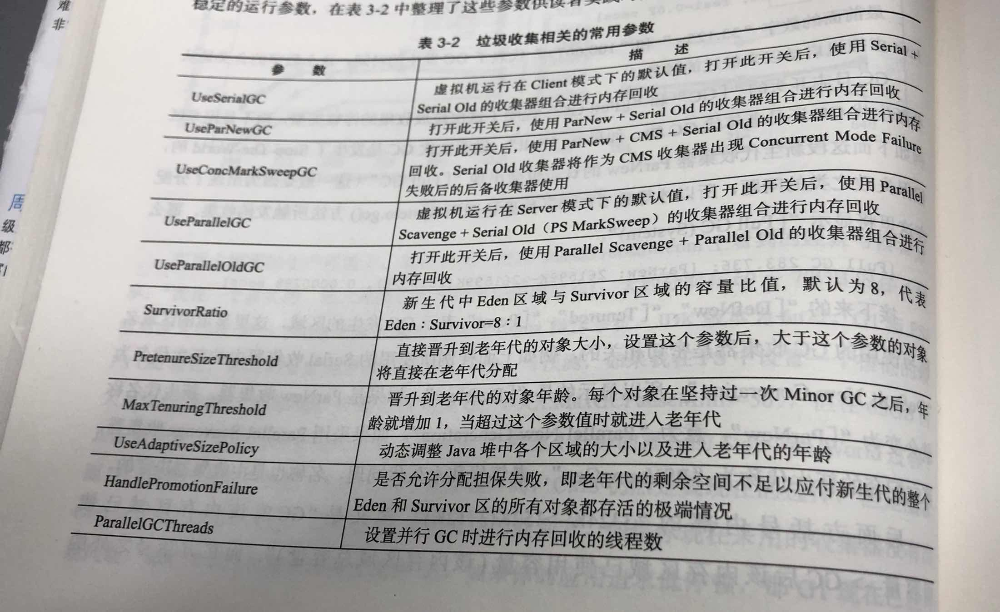
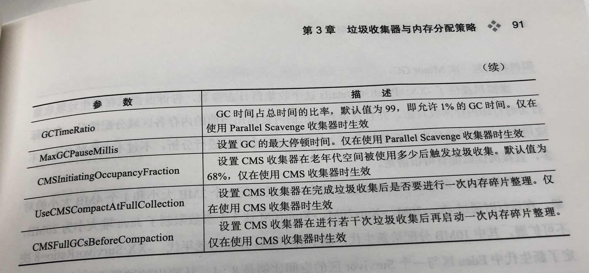

<!DOCTYPE html>


<html lang="en" >


<head>
  <meta charset="utf-8" />
    
  <meta name="viewport" content="width=device-width, initial-scale=1, maximum-scale=1" />
  <title>
    《深入理解Java虚拟机》第三章垃圾收集器与内存分配策略 |  孙云龙的技术博客
  </title>
  <meta name="generator" content="hexo-theme-yilia-plus">
  
  <link rel="shortcut icon" href="/favicon.ico" />
  
  <link rel="stylesheet" href="/dist/main.css">
  <link rel="stylesheet" href="/css/custom.css">
  
  <script src="https://cdn.jsdelivr.net/npm/pace-js@1.0.2/pace.min.js"></script>
  
  

  

<link rel="alternate" href="/atom.xml" title="孙云龙的技术博客" type="application/atom+xml">
</head>

</html>

<body>
  <div id="app">
    <main class="content on">
      <section class="outer">
  <article id="blog-《深入理解Java虚拟机》第三章垃圾收集器与内存分配策略" class="article article-type-blog" itemscope
  itemprop="blogPost" data-scroll-reveal>

  <div class="article-inner">
    
    <header class="article-header">
       
<h1 class="article-title sea-center" style="border-left:0" itemprop="name">
  《深入理解Java虚拟机》第三章垃圾收集器与内存分配策略
</h1>
 

    </header>
    

    
    <div class="article-meta">
      <a href="/2020/04/22/《深入理解Java虚拟机》第三章垃圾收集器与内存分配策略/" class="article-date">
  <time datetime="2020-04-22T11:48:45.000Z" itemprop="datePublished">2020-04-22</time>
</a>
      
  <div class="article-category">
    <a class="article-category-link" href="/categories/JVM/">JVM</a>
  </div>

      
      
<div class="word_count">
    <span class="post-time">
        <span class="post-meta-item-icon">
            <i class="ri-quill-pen-line"></i>
            <span class="post-meta-item-text"> Word count:</span>
            <span class="post-count">2.2k</span>
        </span>
    </span>

    <span class="post-time">
        &nbsp; | &nbsp;
        <span class="post-meta-item-icon">
            <i class="ri-book-open-line"></i>
            <span class="post-meta-item-text"> Reading time≈</span>
            <span class="post-count">7 min</span>
        </span>
    </span>
</div>

      
    </div>
    

    
    
    <div class="tocbot"></div>


    

    
    <div class="article-entry" itemprop="articleBody">
      
      

      
      <h2 id="第一部分-对象已死吗？"><a href="#第一部分-对象已死吗？" class="headerlink" title="第一部分:对象已死吗？"></a>第一部分:对象已死吗？</h2><h3 id="1-1-引用计数算法"><a href="#1-1-引用计数算法" class="headerlink" title="1.1 引用计数算法"></a>1.1 引用计数算法</h3><h4 id="引用计数算法：指的是给对象添加一个引用计数器，每当有一个地方引用它的时候，计数器就-1，当引用失效时，计数器就-1，这样就会出现一个问题，无法判断互相引用的对象已死。"><a href="#引用计数算法：指的是给对象添加一个引用计数器，每当有一个地方引用它的时候，计数器就-1，当引用失效时，计数器就-1，这样就会出现一个问题，无法判断互相引用的对象已死。" class="headerlink" title="引用计数算法：指的是给对象添加一个引用计数器，每当有一个地方引用它的时候，计数器就+1，当引用失效时，计数器就-1，这样就会出现一个问题，无法判断互相引用的对象已死。"></a>引用计数算法：指的是给对象添加一个引用计数器，每当有一个地方引用它的时候，计数器就+1，当引用失效时，计数器就-1，这样就会出现一个问题，无法判断互相引用的对象已死。</h4><p></p>
<h3 id="1-2-可达性分析算法"><a href="#1-2-可达性分析算法" class="headerlink" title="1.2 可达性分析算法"></a>1.2 可达性分析算法</h3><h4 id="可达性分析算法：引入了GC-Roots对象，从GC-Roots到这个对象不可达时，则证明这个对象是不可用的，如图object5，object6-objecct7来说，虽然互相有关联，但是它们到GC-Roots是不可达的，所以他们会被判断为是可回收的对象。"><a href="#可达性分析算法：引入了GC-Roots对象，从GC-Roots到这个对象不可达时，则证明这个对象是不可用的，如图object5，object6-objecct7来说，虽然互相有关联，但是它们到GC-Roots是不可达的，所以他们会被判断为是可回收的对象。" class="headerlink" title="可达性分析算法：引入了GC Roots对象，从GC Roots到这个对象不可达时，则证明这个对象是不可用的，如图object5，object6,objecct7来说，虽然互相有关联，但是它们到GC Roots是不可达的，所以他们会被判断为是可回收的对象。"></a>可达性分析算法：引入了GC Roots对象，从GC Roots到这个对象不可达时，则证明这个对象是不可用的，如图object5，object6,objecct7来说，虽然互相有关联，但是它们到GC Roots是不可达的，所以他们会被判断为是可回收的对象。</h4><h4 id="1-2-1-那么什么样的对象可以作为GC-Roots对象呢？"><a href="#1-2-1-那么什么样的对象可以作为GC-Roots对象呢？" class="headerlink" title="1.2.1 那么什么样的对象可以作为GC Roots对象呢？"></a>1.2.1 那么什么样的对象可以作为GC Roots对象呢？</h4><p>《深入理解Java虚拟机》书中给出的定义是：</p>
<ol>
<li>虚拟机栈中引用的对象</li>
<li>方法区中类静态属性引用的对象</li>
<li>方法区中常量引用的对象</li>
<li>本地方法栈中引用的对象</li>
</ol>
<h3 id="1-3-在谈引用"><a href="#1-3-在谈引用" class="headerlink" title="1.3 在谈引用"></a>1.3 在谈引用</h3><ol>
<li>强引用：在代码中普遍存在的，类似“Object obj = new Object()”,这类的引用，只要强引用还存在，垃圾收集器永远不会回收掉这类对象</li>
<li>软引用：总结起来就是当内存不够发生GC时才会回收的对象。JDK1.2之后，提供了SoftReference类来实现软引用。</li>
<li>弱引用：被弱引用关联的对象，只能存活到下一次发生垃圾回收之前，当垃圾收集器工作时，无论当前内存是否足够，都会回收掉只被弱引用关联的对象。</li>
<li>虚引用：是一种最弱的引用关系，存在的意义只是在这个对象被收集器回收时收到一个系统通知。</li>
</ol>
<h3 id="1-4死之前的“HP药水”"><a href="#1-4死之前的“HP药水”" class="headerlink" title="1.4死之前的“HP药水”"></a>1.4死之前的“HP药水”</h3><h4 id="1-4-1-即使在可达性分析算法中不可达的对象，也并不是“非死不可”，这时候处于濒危状态，但他们还有一瓶HP药水，那就是finalize-方法，要真正宣告一个对象死亡，至少要经历两次标记过程：如果对象在进行可达性分析后发现没有与GC-Roots相连接的引用链，那它将会第一次标记并且进行一次筛选，筛选的条件时此对象是否有必要执行finalize-方法。当对象没有覆盖finalize-方法，或者finalize-方法已经被虚拟机调用过，虚拟机将这两种情况都视为“没有必要执行”。"><a href="#1-4-1-即使在可达性分析算法中不可达的对象，也并不是“非死不可”，这时候处于濒危状态，但他们还有一瓶HP药水，那就是finalize-方法，要真正宣告一个对象死亡，至少要经历两次标记过程：如果对象在进行可达性分析后发现没有与GC-Roots相连接的引用链，那它将会第一次标记并且进行一次筛选，筛选的条件时此对象是否有必要执行finalize-方法。当对象没有覆盖finalize-方法，或者finalize-方法已经被虚拟机调用过，虚拟机将这两种情况都视为“没有必要执行”。" class="headerlink" title="1.4.1 即使在可达性分析算法中不可达的对象，也并不是“非死不可”，这时候处于濒危状态，但他们还有一瓶HP药水，那就是finalize()方法，要真正宣告一个对象死亡，至少要经历两次标记过程：如果对象在进行可达性分析后发现没有与GC Roots相连接的引用链，那它将会第一次标记并且进行一次筛选，筛选的条件时此对象是否有必要执行finalize()方法。当对象没有覆盖finalize()方法，或者finalize()方法已经被虚拟机调用过，虚拟机将这两种情况都视为“没有必要执行”。"></a>1.4.1 即使在可达性分析算法中不可达的对象，也并不是“非死不可”，这时候处于濒危状态，但他们还有一瓶HP药水，那就是finalize()方法，要真正宣告一个对象死亡，至少要经历两次标记过程：如果对象在进行可达性分析后发现没有与GC Roots相连接的引用链，那它将会第一次标记并且进行一次筛选，筛选的条件时此对象是否有必要执行finalize()方法。当对象没有覆盖finalize()方法，或者finalize()方法已经被虚拟机调用过，虚拟机将这两种情况都视为“没有必要执行”。</h4><h4 id="1-4-2-如果这个对象被判定为有必要执行finalize-方法，那么这个对象将会被放置在一个叫做F-Queue的队列之中，并在稍后由一个虚拟机自动建立的，低优先级的Finalizer线程去执行它。这里所谓的“执行”是指虚拟机会触发这个方法，但并不承诺会等待它运行结束，这样做的原因是，如果在finalize-方法中执行缓慢，或者发生了死循环，将很可能会导致F-Queue队列中其他的对象永久处于等待。"><a href="#1-4-2-如果这个对象被判定为有必要执行finalize-方法，那么这个对象将会被放置在一个叫做F-Queue的队列之中，并在稍后由一个虚拟机自动建立的，低优先级的Finalizer线程去执行它。这里所谓的“执行”是指虚拟机会触发这个方法，但并不承诺会等待它运行结束，这样做的原因是，如果在finalize-方法中执行缓慢，或者发生了死循环，将很可能会导致F-Queue队列中其他的对象永久处于等待。" class="headerlink" title="1.4.2 如果这个对象被判定为有必要执行finalize()方法，那么这个对象将会被放置在一个叫做F-Queue的队列之中，并在稍后由一个虚拟机自动建立的，低优先级的Finalizer线程去执行它。这里所谓的“执行”是指虚拟机会触发这个方法，但并不承诺会等待它运行结束，这样做的原因是，如果在finalize()方法中执行缓慢，或者发生了死循环，将很可能会导致F-Queue队列中其他的对象永久处于等待。"></a>1.4.2 如果这个对象被判定为有必要执行finalize()方法，那么这个对象将会被放置在一个叫做F-Queue的队列之中，并在稍后由一个虚拟机自动建立的，低优先级的Finalizer线程去执行它。这里所谓的“执行”是指虚拟机会触发这个方法，但并不承诺会等待它运行结束，这样做的原因是，如果在finalize()方法中执行缓慢，或者发生了死循环，将很可能会导致F-Queue队列中其他的对象永久处于等待。</h4><h4 id="1-4-3-如果对象要在finalize-中拯救自己-只需要重新与引用连上的任何一个对象建立关联即可。"><a href="#1-4-3-如果对象要在finalize-中拯救自己-只需要重新与引用连上的任何一个对象建立关联即可。" class="headerlink" title="1.4.3 如果对象要在finalize()中拯救自己-只需要重新与引用连上的任何一个对象建立关联即可。"></a>1.4.3 如果对象要在finalize()中拯救自己-只需要重新与引用连上的任何一个对象建立关联即可。</h4><h2 id="第二部分-GC场所"><a href="#第二部分-GC场所" class="headerlink" title="第二部分:GC场所"></a>第二部分:GC场所</h2><h3 id="1-堆作为垃圾回收的主要场所，所有新建的对象都存储在堆上，但栈并不会发生垃圾回收，因为栈中存储的是线程私有的，随着线程关闭就自动释放。将堆中的内存分为新生代和老年代，这里在后面谈到垃圾回收算法时会详细说。"><a href="#1-堆作为垃圾回收的主要场所，所有新建的对象都存储在堆上，但栈并不会发生垃圾回收，因为栈中存储的是线程私有的，随着线程关闭就自动释放。将堆中的内存分为新生代和老年代，这里在后面谈到垃圾回收算法时会详细说。" class="headerlink" title="1.堆作为垃圾回收的主要场所，所有新建的对象都存储在堆上，但栈并不会发生垃圾回收，因为栈中存储的是线程私有的，随着线程关闭就自动释放。将堆中的内存分为新生代和老年代，这里在后面谈到垃圾回收算法时会详细说。"></a>1.堆作为垃圾回收的主要场所，所有新建的对象都存储在堆上，但栈并不会发生垃圾回收，因为栈中存储的是线程私有的，随着线程关闭就自动释放。将堆中的内存分为新生代和老年代，这里在后面谈到垃圾回收算法时会详细说。</h3><h3 id="2-方法区-也叫永久代，针对HotSpot虚拟机来说-，很多人都认为方法区中时没有垃圾回收的，Java虚拟机规范中确实说过可以不要求虚拟机在方法区实现垃圾回收，主要是垃圾收集的“性价比”比较低"><a href="#2-方法区-也叫永久代，针对HotSpot虚拟机来说-，很多人都认为方法区中时没有垃圾回收的，Java虚拟机规范中确实说过可以不要求虚拟机在方法区实现垃圾回收，主要是垃圾收集的“性价比”比较低" class="headerlink" title="2.方法区(也叫永久代，针对HotSpot虚拟机来说)，很多人都认为方法区中时没有垃圾回收的，Java虚拟机规范中确实说过可以不要求虚拟机在方法区实现垃圾回收，主要是垃圾收集的“性价比”比较低"></a>2.方法区(也叫永久代，针对HotSpot虚拟机来说)，很多人都认为方法区中时没有垃圾回收的，Java虚拟机规范中确实说过可以不要求虚拟机在方法区实现垃圾回收，主要是垃圾收集的“性价比”比较低</h3><h3 id="方法区的垃圾回收主要回收两部分内容：废弃常量和无用的类。那么如何判断废弃常量和无用的类？"><a href="#方法区的垃圾回收主要回收两部分内容：废弃常量和无用的类。那么如何判断废弃常量和无用的类？" class="headerlink" title="方法区的垃圾回收主要回收两部分内容：废弃常量和无用的类。那么如何判断废弃常量和无用的类？"></a>方法区的垃圾回收主要回收两部分内容：废弃常量和无用的类。那么如何判断废弃常量和无用的类？</h3><h4 id="2-1-废弃常量：假如一个字符串“abc”-放入了常量池，只要当前系统中没有有任何一个String对象引用常量池中的“abc”常量，如果这个时候发生了内存回收，而且必要的话，那么这个“abc”常量就会被系统清理出常量池。"><a href="#2-1-废弃常量：假如一个字符串“abc”-放入了常量池，只要当前系统中没有有任何一个String对象引用常量池中的“abc”常量，如果这个时候发生了内存回收，而且必要的话，那么这个“abc”常量就会被系统清理出常量池。" class="headerlink" title="2.1 废弃常量：假如一个字符串“abc”,放入了常量池，只要当前系统中没有有任何一个String对象引用常量池中的“abc”常量，如果这个时候发生了内存回收，而且必要的话，那么这个“abc”常量就会被系统清理出常量池。"></a>2.1 废弃常量：假如一个字符串“abc”,放入了常量池，只要当前系统中没有有任何一个String对象引用常量池中的“abc”常量，如果这个时候发生了内存回收，而且必要的话，那么这个“abc”常量就会被系统清理出常量池。</h4><h4 id="2-2-无用的类："><a href="#2-2-无用的类：" class="headerlink" title="2.2 无用的类："></a>2.2 无用的类：</h4><ol>
<li>该类所有的实例都已经被回收，也就是Java堆中不存在该类的任何实例。</li>
<li>加载该类的ClassLoader已经被回收。</li>
<li>该类对象的java.lang.Class对象没有在任何地方被引用，无法在任何地方通过反射访问该类的方法。</li>
</ol>
<h2 id="第三部分-垃圾回收算法"><a href="#第三部分-垃圾回收算法" class="headerlink" title="第三部分:垃圾回收算法"></a>第三部分:垃圾回收算法</h2><h3 id="3-1-标记清除算法"><a href="#3-1-标记清除算法" class="headerlink" title="3.1 标记清除算法"></a>3.1 标记清除算法</h3><p>缺点有内存碎片产生，缺点比较明显。</p>
<p></p>
<h3 id="3-2-复制算法-新生代"><a href="#3-2-复制算法-新生代" class="headerlink" title="3.2 复制算法(新生代)"></a>3.2 复制算法(新生代)</h3><p>思想是将内存一分为二，每次值用一半的内存，发生GC的时候将存活的对象放入另一半内存，以此往复。</p>
<p>新生代的对象IBM研究98%都是朝生夕死的，所以没必要按照1:1的比例分配，经过研究8：1:1是最优的，为什么有两个Survivor区下文有解释。</p>
<p>对象优先存入Eden区和一个Survivor区中，将发生Minor GC，之后将存活的对象放入另一个Survivor区，然后下一次存入对象，与Eden区一起的是有存活对象的Sruvivor区</p>
<p></p>
<h3 id="3-3-标记-整理算法-老年代"><a href="#3-3-标记-整理算法-老年代" class="headerlink" title="3.3 标记-整理算法(老年代)"></a>3.3 标记-整理算法(老年代)</h3><p>大体上与标记清除算法一致，将存活的对象集中放到一起，避免了内存分片，因为老年代上存活的对象大部分都是大对象。</p>
<p></p>
<h3 id="3-4-分代收集算法"><a href="#3-4-分代收集算法" class="headerlink" title="3.4 分代收集算法"></a>3.4 分代收集算法</h3><p>判断新生代就用复制算法，判断老年代就用标记-整理算法，那么如何判断新生代，老年代？接着看</p>
<h2 id="第四部分-内存分配"><a href="#第四部分-内存分配" class="headerlink" title="第四部分:内存分配"></a>第四部分:内存分配</h2><h3 id="4-1-新生代，老年代"><a href="#4-1-新生代，老年代" class="headerlink" title="4.1 新生代，老年代"></a>4.1 新生代，老年代</h3><p></p>
<p></p>
<h3 id="4-2-Minor-GC和Full-GC-Major-GC"><a href="#4-2-Minor-GC和Full-GC-Major-GC" class="headerlink" title="4.2 Minor GC和Full GC(Major GC)"></a>4.2 Minor GC和Full GC(Major GC)</h3><h4 id="4-2-1-Minor-GC是发生在新生代的GC-因为新生代都是朝生夕死的对象，所以发生非常频繁，速度也较快。"><a href="#4-2-1-Minor-GC是发生在新生代的GC-因为新生代都是朝生夕死的对象，所以发生非常频繁，速度也较快。" class="headerlink" title="4.2.1 Minor GC是发生在新生代的GC,因为新生代都是朝生夕死的对象，所以发生非常频繁，速度也较快。"></a>4.2.1 Minor GC是发生在新生代的GC,因为新生代都是朝生夕死的对象，所以发生非常频繁，速度也较快。</h4><h4 id="4-2-2-Full-GC也叫Major-GC是发生在老年代的GC，出现了Full-GC一般情况下同时也会伴随着Major-GC，当然这不绝对，通常情况下Full-GC的速度会比Minor-GC速度慢10倍以上。"><a href="#4-2-2-Full-GC也叫Major-GC是发生在老年代的GC，出现了Full-GC一般情况下同时也会伴随着Major-GC，当然这不绝对，通常情况下Full-GC的速度会比Minor-GC速度慢10倍以上。" class="headerlink" title="4.2.2 Full GC也叫Major GC是发生在老年代的GC，出现了Full GC一般情况下同时也会伴随着Major GC，当然这不绝对，通常情况下Full GC的速度会比Minor GC速度慢10倍以上。"></a>4.2.2 Full GC也叫Major GC是发生在老年代的GC，出现了Full GC一般情况下同时也会伴随着Major GC，当然这不绝对，通常情况下Full GC的速度会比Minor GC速度慢10倍以上。</h4><h3 id="4-3-为什么新生代中有两个Survivor？"><a href="#4-3-为什么新生代中有两个Survivor？" class="headerlink" title="4.3 为什么新生代中有两个Survivor？"></a>4.3 为什么新生代中有两个Survivor？</h3><p>4.3.1 这里就提到了为什么新生代中要有两个Survivor区？</p>
<p>提前说下结论：防止内存碎片的发生。</p>
<p>在此之前先来讨论下为什么要分新生代和老年代？</p>
<p>如果不分新生代和老年代的话那么每发生一次GC，就会对堆中的所有对象遍历，想象是不是都痛苦？</p>
<p>那么继续讨论为什么会有Survivor区？</p>
<p>如果没有Survivor区的话，那么发生一次Minor GC就会将存活的对象放入老年代，导致老年代被很快打满，发生Full GC，发生Full GC消耗的时间和资源是非常大的。这是不是也很坑？</p>
<p>那么为什么要有两个Survivor区？</p>
<p>之前讨论了为什么要有Survivor区，现在假设只有一个Survivor区，第一次发生Minor GC,Eden区中存活的对象放入Survivor区中，在下一次Minor GC发生的时候，Eden区中存活的对象在此放入Survivor区中,要知道此时Survivor中是存在对象的，可想而知这两次放入的对象是不连续的，会发生内存碎片。这样就顺理成章的要有两个Survivor区。</p>
<p>这时有一个问题，如果Eden + Survior区中存活的对象大于Survivor的大小，就会需要老年代进行担保，那么每次发生minor GC的时候，虚拟机会先检查老年代最大可用的连续空间是否大于新生代所有对象的总空间，如果这个条件成立，那么Minor GC可以确保安全的执行，如果不成立，则虚拟机会查看HandlePromotionFailure设置值是否允许担保失败，如果允许那么会继续检查老年代最大可用的连续空间是否大于历次晋升到老年代对象的平均大小，如果大于，将尝试进行一次Minor GC,尽管这次Minor GC是有风险的；如果小于或者HandlePromotionFailure设置为不允许冒险，那这时也要改为一个Full GC。</p>
<h3 id="附上一些垃圾收集器的参数"><a href="#附上一些垃圾收集器的参数" class="headerlink" title="附上一些垃圾收集器的参数"></a>附上一些垃圾收集器的参数</h3><p><br></p>

      
      <!-- reward -->
      
    </div>
    
    
      <!-- copyright -->
      
        <div class="declare">
          <ul class="post-copyright">
            <li>
              <i class="ri-copyright-line"></i>
              <strong>Copyright： </strong>
              Copyright is owned by the author. For commercial reprints, please contact the author for authorization. For non-commercial reprints, please indicate the source.
            </li>
          </ul>
        </div>
        
    <footer class="article-footer">
      
          
<div class="share-btn">
      <span class="share-sns share-outer">
        <i class="ri-share-forward-line"></i>
        分享
      </span>
      <div class="share-wrap">
        <i class="arrow"></i>
        <div class="share-icons">
          
          <a class="weibo share-sns" href="javascript:;" data-type="weibo">
            <i class="ri-weibo-fill"></i>
          </a>
          <a class="weixin share-sns wxFab" href="javascript:;" data-type="weixin">
            <i class="ri-wechat-fill"></i>
          </a>
          <a class="qq share-sns" href="javascript:;" data-type="qq">
            <i class="ri-qq-fill"></i>
          </a>
          <a class="douban share-sns" href="javascript:;" data-type="douban">
            <i class="ri-douban-line"></i>
          </a>
          <!-- <a class="qzone share-sns" href="javascript:;" data-type="qzone">
            <i class="icon icon-qzone"></i>
          </a> -->
          
          <a class="facebook share-sns" href="javascript:;" data-type="facebook">
            <i class="ri-facebook-circle-fill"></i>
          </a>
          <a class="twitter share-sns" href="javascript:;" data-type="twitter">
            <i class="ri-twitter-fill"></i>
          </a>
          <a class="google share-sns" href="javascript:;" data-type="google">
            <i class="ri-google-fill"></i>
          </a>
        </div>
      </div>
</div>

<div class="wx-share-modal">
    <a class="modal-close" href="javascript:;"><i class="ri-close-circle-line"></i></a>
    <p>扫一扫，分享到微信</p>
    <div class="wx-qrcode">
      
    </div>
</div>

<div id="share-mask"></div>
      
      
  <ul class="article-tag-list"><li class="article-tag-list-item"><a class="article-tag-list-link" href="/tags/Java内存区域与内存溢出异常/">Java内存区域与内存溢出异常</a></li><li class="article-tag-list-item"><a class="article-tag-list-link" href="/tags/深入理解Java虚拟机/">深入理解Java虚拟机</a></li></ul>


    </footer>

  </div>

  
  
  <nav class="article-nav">
    
      <a href="/2020/04/22/go-big-or-go-home-38/" class="article-nav-link">
        <strong class="article-nav-caption">上一篇</strong>
        <div class="article-nav-title">
          
            go big or go home-38
          
        </div>
      </a>
    
    
      <a href="/2020/04/21/go-big-or-go-home-37/" class="article-nav-link">
        <strong class="article-nav-caption">下一篇</strong>
        <div class="article-nav-title">go big or go home-37</div>
      </a>
    
  </nav>


  

  
  
<!-- valine评论 -->
<div id="vcomments-box">
    <div id="vcomments">
    </div>
</div>
<script src="//cdn1.lncld.net/static/js/3.0.4/av-min.js"></script>
<script src='https://cdn.jsdelivr.net/npm/valine@1.3.10/dist/Valine.min.js'></script>
<script>
    new Valine({
        el: '#vcomments',
        app_id: '',
        app_key: '',
        path: window.location.pathname,
        notify: 'false',
        verify: 'false',
        avatar: 'mp',
        placeholder: '给我的文章加点评论吧~',
        recordIP: true
    });
    const infoEle = document.querySelector('#vcomments .info');
    if (infoEle && infoEle.childNodes && infoEle.childNodes.length > 0) {
        infoEle.childNodes.forEach(function (item) {
            item.parentNode.removeChild(item);
        });
    }
</script>
<style>
    #vcomments-box {
        padding: 5px 30px;
    }

    @media screen and (max-width: 800px) {
        #vcomments-box {
            padding: 5px 0px;
        }
    }

    #vcomments-box #vcomments {
        background-color: #fff;
    }

    .v .vlist .vcard .vh {
        padding-right: 20px;
    }

    .v .vlist .vcard {
        padding-left: 10px;
    }
</style>

  

  
  
  

</article>
</section>
      <footer class="footer">
  <div class="outer">
    <ul class="list-inline">
      <li>
        &copy;
        2015-2020
        Gavin
      </li>
      <li>
        
        Powered by
        
        
        <a href="https://hexo.io" target="_blank">Hexo</a> Theme <a href="https://github.com/Shen-Yu/hexo-theme-ayer" target="_blank">Ayer</a>
        
      </li>
    </ul>
    <ul class="list-inline">
      <li>
        
        
        <span>
  <i>PV:<span id="busuanzi_value_page_pv"></span></i>
  <i>UV:<span id="busuanzi_value_site_uv"></span></i>
</span>
        
      </li>
      
      <li>
        <!-- cnzz统计 -->
        
        <script type="text/javascript" src='https://s9.cnzz.com/z_stat.php?id=1278069914&amp;web_id=1278069914'></script>
        
      </li>
    </ul>
  </div>
</footer>
      <div class="float_btns">
        <div class="totop" id="totop">
  <i class="ri-arrow-up-line"></i>
</div>

<div class="todark" id="todark">
  <i class="ri-moon-line"></i>
</div>

      </div>
    </main>
    <aside class="sidebar on">
      <button class="navbar-toggle"></button>
<nav class="navbar">
  
  <div class="logo">
    <a href="/"></a>
  </div>
  
  <ul class="nav nav-main">
    
    <li class="nav-item">
      <a class="nav-item-link" href="/">主页</a>
    </li>
    
    <li class="nav-item">
      <a class="nav-item-link" href="/archives">归档</a>
    </li>
    
    <li class="nav-item">
      <a class="nav-item-link" href="/categories">目录</a>
    </li>
    
    <li class="nav-item">
      <a class="nav-item-link" href="/tags">标签</a>
    </li>
    
    <li class="nav-item">
      <a class="nav-item-link" href="/about">关于我</a>
    </li>
    
  </ul>
</nav>
<nav class="navbar navbar-bottom">
  <ul class="nav">
    <li class="nav-item">
      
      <a class="nav-item-link nav-item-search"  title="Search">
        <i class="ri-search-line"></i>
      </a>
      
      
      <a class="nav-item-link" target="_blank" href="/atom.xml" title="RSS Feed">
        <i class="ri-rss-line"></i>
      </a>
      
    </li>
  </ul>
</nav>
<div class="search-form-wrap">
  <div class="local-search local-search-plugin">
  <input type="search" id="local-search-input" class="local-search-input" placeholder="Search...">
  <div id="local-search-result" class="local-search-result"></div>
</div>
</div>
    </aside>
    <script>
      if (window.matchMedia("(max-width: 768px)").matches) {
        document.querySelector('.content').classList.remove('on');
        document.querySelector('.sidebar').classList.remove('on');
      }
    </script>
    <div id="mask"></div>

<!-- #reward -->
<div id="reward">
  <span class="close"><i class="ri-close-line"></i></span>
  <p class="reward-p"><i class="ri-cup-line"></i>请我喝杯咖啡吧~</p>
  <div class="reward-box">
    
    <div class="reward-item">
      
      <span class="reward-type">支付宝</span>
    </div>
    
    
    <div class="reward-item">
      
      <span class="reward-type">微信</span>
    </div>
    
  </div>
</div>
    <script src="/js/jquery-2.0.3.min.js"></script>
<script src="/js/lazyload.min.js"></script>

<script>
  try {
    var typed = new Typed("#subtitle", {
      strings: ['面朝大海，春暖花开', '愿你一生努力，一生被爱', '想要的都拥有，得不到的都释怀'],
      startDelay: 0,
      typeSpeed: 200,
      loop: true,
      backSpeed: 100,
      showCursor: true
    });
  } catch (err) {
  }

</script>


<script src="/js/tocbot.min.js"></script>
<script>
  // Tocbot_v4.7.0  http://tscanlin.github.io/tocbot/
  tocbot.init({
    tocSelector: '.tocbot',
    contentSelector: '.article-entry',
    headingSelector: 'h1, h2, h3, h4, h5, h6',
    hasInnerContainers: true,
    scrollSmooth: true,
    scrollContainer: 'main',
    positionFixedSelector: '.tocbot',
    positionFixedClass: 'is-position-fixed',
    fixedSidebarOffset: 'auto'
  });
</script>


<script src="https://cdn.jsdelivr.net/npm/jquery-modal@0.9.2/jquery.modal.min.js"></script>
<link rel="stylesheet" href="https://cdn.jsdelivr.net/npm/jquery-modal@0.9.2/jquery.modal.min.css">
<script src="https://cdn.jsdelivr.net/npm/justifiedGallery@3.7.0/dist/js/jquery.justifiedGallery.min.js"></script>
<script src="/dist/main.js"></script>


<!-- Root element of PhotoSwipe. Must have class pswp. -->
<div class="pswp" tabindex="-1" role="dialog" aria-hidden="true">

    <!-- Background of PhotoSwipe. 
         It's a separate element as animating opacity is faster than rgba(). -->
    <div class="pswp__bg"></div>

    <!-- Slides wrapper with overflow:hidden. -->
    <div class="pswp__scroll-wrap">

        <!-- Container that holds slides. 
            PhotoSwipe keeps only 3 of them in the DOM to save memory.
            Don't modify these 3 pswp__item elements, data is added later on. -->
        <div class="pswp__container">
            <div class="pswp__item"></div>
            <div class="pswp__item"></div>
            <div class="pswp__item"></div>
        </div>

        <!-- Default (PhotoSwipeUI_Default) interface on top of sliding area. Can be changed. -->
        <div class="pswp__ui pswp__ui--hidden">

            <div class="pswp__top-bar">

                <!--  Controls are self-explanatory. Order can be changed. -->

                <div class="pswp__counter"></div>

                <button class="pswp__button pswp__button--close" title="Close (Esc)"></button>

                <button class="pswp__button pswp__button--share" style="display:none" title="Share"></button>

                <button class="pswp__button pswp__button--fs" title="Toggle fullscreen"></button>

                <button class="pswp__button pswp__button--zoom" title="Zoom in/out"></button>

                <!-- Preloader demo http://codepen.io/dimsemenov/pen/yyBWoR -->
                <!-- element will get class pswp__preloader--active when preloader is running -->
                <div class="pswp__preloader">
                    <div class="pswp__preloader__icn">
                        <div class="pswp__preloader__cut">
                            <div class="pswp__preloader__donut"></div>
                        </div>
                    </div>
                </div>
            </div>

            <div class="pswp__share-modal pswp__share-modal--hidden pswp__single-tap">
                <div class="pswp__share-tooltip"></div>
            </div>

            <button class="pswp__button pswp__button--arrow--left" title="Previous (arrow left)">
            </button>

            <button class="pswp__button pswp__button--arrow--right" title="Next (arrow right)">
            </button>

            <div class="pswp__caption">
                <div class="pswp__caption__center"></div>
            </div>

        </div>

    </div>

</div>

<link rel="stylesheet" href="https://cdn.jsdelivr.net/npm/photoswipe@4.1.3/dist/photoswipe.min.css">
<link rel="stylesheet" href="https://cdn.jsdelivr.net/npm/photoswipe@4.1.3/dist/default-skin/default-skin.min.css">
<script src="https://cdn.jsdelivr.net/npm/photoswipe@4.1.3/dist/photoswipe.min.js"></script>
<script src="https://cdn.jsdelivr.net/npm/photoswipe@4.1.3/dist/photoswipe-ui-default.min.js"></script>

<script>
    function viewer_init() {
        let pswpElement = document.querySelectorAll('.pswp')[0];
        let $imgArr = document.querySelectorAll(('.article-entry img:not(.reward-img)'))

        $imgArr.forEach(($em, i) => {
            $em.onclick = () => {
                // slider展开状态
                // todo: 这样不好，后面改成状态
                if (document.querySelector('.left-col.show')) return
                let items = []
                $imgArr.forEach(($em2, i2) => {
                    let img = $em2.getAttribute('data-idx', i2)
                    let src = $em2.getAttribute('data-target') || $em2.getAttribute('src')
                    let title = $em2.getAttribute('alt')
                    // 获得原图尺寸
                    const image = new Image()
                    image.src = src
                    items.push({
                        src: src,
                        w: image.width || $em2.width,
                        h: image.height || $em2.height,
                        title: title
                    })
                })
                var gallery = new PhotoSwipe(pswpElement, PhotoSwipeUI_Default, items, {
                    index: parseInt(i)
                });
                gallery.init()
            }
        })
    }
    viewer_init()
</script>


<script src="/js/busuanzi-2.3.pure.min.js"></script>


<script type="text/javascript" src="https://js.users.51.la/20544303.js"></script>


    
  </div>
</body>

</html>